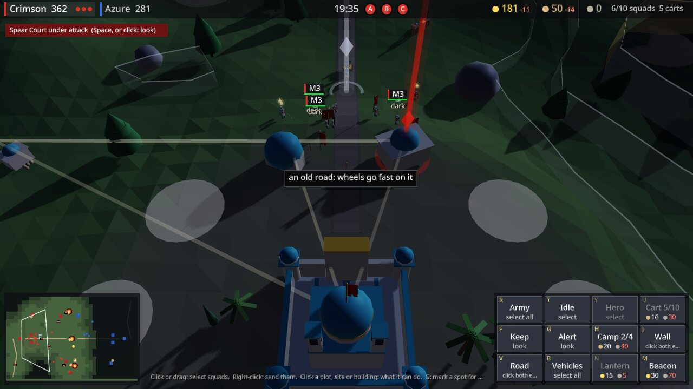

Humans naturally live in half-hour chunks. If alien anthropologists studied us without
knowing about clocks, they'd decide our unit of time was thirty minutes. Thirties starts
there: it lays your day out as "thirties" between sunrise and sunset. Clock times play
second fiddle.
You plan the day with it in plain conversation. It keeps your to-do list and schedule,
moves only what needs moving when plans gang aft agley, helps with long-term planning,
and can text you on Telegram. Think of it as the off-gridder's Siri. It's heading toward
running entirely on your own machine.
Still in the making. Sola is a hollow world with its sun inside. Where that light breaks
up through the crust are the Sunwells, rich in sunsilver, and seven very different peoples
fight over them. Everywhere else lies in the Dim, a long twilight under glowing moons, and
the only way through it is to carry light: lanterns and beacons that burn sunsilver, and a
light carrier in every squad.
Each team has one commander, playing a real-time strategy game from above, while everyone
else fights on the ground in the commander's squads. The seat can change hands at any
time. And if it's a person, it can be played: a soldier, a porter, a builder, a healer, a
light-bearer, or the crew of a war wagon, a siege tower or a war galley. Bots fill any seat
nobody's in.
Everything has a cost, and everything has to be moved, planned for and protected.
Sunsilver, provisions and materials travel by cart and caravan along roads the commander
builds, carts get raided, and an army that runs out of food deserts.
There are two ages to fight in: the Age of Lanterns, with blades, bows and beasts, and the
Age of Stars, where rifles are cheap and armoured melee is the rare elite. Nine maps, for
two, four or eight teams, and it's built for battles of up to 128 players.

Not playable yet. We'll put it here once we've played it enough to be happy with it.